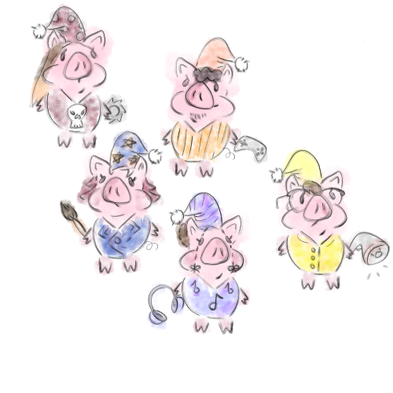

Bem vindo(a)
Olá, nós somos a Pijammers Studio!
Somos um estúdio de produção de jogos independentes.
Nossa equipe é composta por jovens universitários que trabalham em conjunto para produzir seus próprios jogos dos mais diversos estilos!
Nosso projeto atual consiste em aprimorar o jogo Failtales: Badwolves que foi produzido para a GameJAM+.
Failtales: Badwolves
Pitch
Fail Tales: Bad Wolves é o primeiro jogo de uma potencial coleção de releituras de contos de fadas tradicionais. Apresenta um estilo nostálgico, defesa de torre, gerenciamento de recursos e construção de armadilhas.
Jogabilidade
Neste protótipo, o jogador desafia os limites de sua criatividade para montar armadilhas e impedir que o lobo chegue à casa de palha de Cícero. Com o humor clássico dos desenhos animados, divirta-se com as animações e as diferentes maneiras de interagir com o lobo e o ambiente. O mapa não é uma limitação, é sua maior arma.
Como jogar?
Ao iniciar um capítulo do livro, você será imerso em um conto temático. No protótipo atual, temos o primeiro capítulo, que conta a história de Cícero e suas desventuras tentando impedir que o Lobo Mau derrube sua casa.
Setas do teclado – Mover
Botão direito do mouse – Posicionar armadilhas no espaço indicado
Q – Iniciar o caos
Aviso: reconhecemos que neste protótipo nem todas as mecânicas são tão satisfatórias quanto o esperado. No entanto, o projeto continuará recebendo atualizações e adoraríamos ouvir suas sugestões e feedback.Roteiro
planejamos:
- Melhorar e expandir as mecânicas de jogo atuais.
- Implementar animações mais responsivas. Refinar a arte e a percepção estética geral do jogo.
- Melhorar e adicionar novas trilhas sonoras e efeitos sonoros para tornar a jogabilidade mais dinâmica e imersiva.
- Adicionar mais histórias relacionadas a lobos aos nossos Fail Tales.
- Refinamento técnico geral para tornar o projeto o mais jogável possível.
Nossa equipe
O Pijammers Studio é uma equipe de jovens universitários apaixonados por criação de jogos, composta por:
- Dalila como Diretora de Trilha Sonora Original (OST)
- Lucas como Diretor de Efeitos Sonoros (SFX)
- Luiz como Diretor de Design de Níveis
- Luna como Diretora de Efeitos Sonoros (GFX)
- Rian (Félix) como Diretor de Programação
